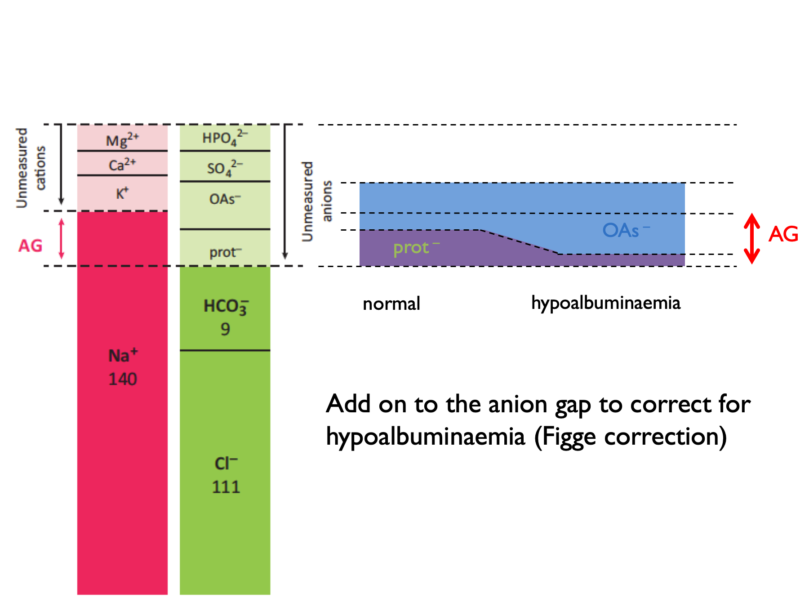

Chapter 5 Metabolic acidosis
5.0.1 Anion & osmolar gaps
Metabolic acidoses are classified as wide-anion-gap (WGMA) or normal-anion-gap (= hyperchloraemic, HCMA). In WGMA, the acidosis is caused by an exogenous acid present in plasma. This is not measured directly, but will manifest as an apparent “anion gap”.
\[\begin{equation} \text{anion gap, } AG=P_{Na}-P_{HCO_{3}}-P_{Cl} \tag{4.5} \end{equation}\]
NB some people also include PK in the calculation.
\[\begin{equation} \text{corrected anion gap, } cAG=AG+\frac{40-P_{albumin}}{4} \tag{4.6} \end{equation}\]
NB ADD ON to correct for hypoalbuminaemia.
A normal AG is 12 ± 2 (or 16 ± 2 if include K+ in the calculation).
‘Deltas’ are calculated by comparing to expected normal values (for AG or HCO3).
\[\begin{equation} \text{delta anion gap, } \Delta AG=AG-12 \tag{4.7} \end{equation}\]
\[\begin{equation} \text{delta bicarbonate, } \Delta HCO_{3}=25-P_{HCO{3}} \tag{4.8} \end{equation}\]
\[\begin{equation} \text{delta ratio, } =\frac{\Delta AG}{\Delta HCO_{3}} \tag{4.9} \end{equation}\]
\[\begin{equation} \text{delta delta, } \Delta \Delta = \Delta AG - \Delta HCO_{3} \text{ (in ketoacidosis)}\\ \text{delta delta, } \Delta \Delta = (0.6 \times \Delta AG) - \Delta HCO_{3} \text{ (in lactic acidosis)}\\ \tag{4.10} \end{equation}\]The correction factor (0.6) applied when computing the delta in lactic acidosis is thought to be due to lower renal clearance of lactate (compared to ketone) anions (Berend et al., 2014).
Normal range for delta ratio (ΔAG / ΔHCO3) is 1 – 2.
Therefore to interpret delta ratios:

Osmolar gaps are used to identify exogenous or un-measured osmoles in the plasma (which may be present in a subset of WGMA in which the acid is osmotically active):
\[\begin{equation} \text{calculated osmolality, } cP_{Osm} =(2\times P_{Na})+P_{urea}+P_{glucose} \tag{4.11} \end{equation}\]
\[\begin{equation} \text{osmolar gap, } OG = \text{measured } P_{Osm} - cP_{Osm} \tag{4.12} \end{equation}\]Historically, it has been technically difficult to measure urinary ammonium. Therefore the urinary anion gap has been used as a proxy measure - either in isolation or in combination with the urinary osmolar gap (Kraut & Madias, 2012; Sharma et al., 2015):
\[\begin{equation} \text{urinary anion gap, } UAG=U_{Na}+U_{K}-U_{Cl} \tag{4.13} \end{equation}\]
\[\begin{equation} \text{calculated urinary osmolality, } cU_{Osm} = 2 \times (U_{Na}+U_{K})+U_{urea}+U_{glucose} \tag{4.14} \end{equation}\]
\[\begin{equation} \text{urinary osmolar gap, } UOG=\text{measured } U_{Osm} - cU_{Osm} \tag{4.15} \end{equation}\]
\[\begin{equation} \text{urinary cations, } U_{cations}=\frac{U_{Osm}-U_{urea}-U_{glucose}}{2} \tag{4.16} \end{equation}\]
\[\begin{equation} \text{calculated urinary ammonium, } cU_{NH_{4}}\approx UAG \approx \frac{UOG}{2} \approx U_{cations}-(U_{Na}+U_{K}) \tag{4.17} \end{equation}\]UAG normal range is positive 30 – 50.
5.0.2 Causes of a metabolic acidosis
5.0.2.1 Approach to metabolic acidosis
Order of investigations in metabolic acidosis:
- cAG – is this a normal or wide gap acidosis?
- ΔAG vs ΔHCO3 in WGMA – is rise in AG proportional to fall in HCO3 (or is this a mixed metabolic disorder)?
- PaCO2 – is the fall in PaCO2 proportional to the fall in HCO3 (0.16 kPa per mM)?
- +/- OG for a WGMA
- +/- UAG for HCMA
- +/- FEHCO3 for HCMA with –ve UAG
5.0.2.2 WGMA
Differential diagnosis of a wide-gap metabolic acidosis:
| G | glycols ethylene glycol; propylene glycol * |
| O | oxoproline |
| L | L-lactate shock, liver disease, metformin, linezolid (several weeks into Rx) |
| D | D-lactate short bowel syndromes |
| M | methanol * |
| A | aspirin |
| R | renal failure |
| K | ketoacidosis *(?) |
Propylene glycol (a solvent for parenteral medications: lorazepam, diazepam, phenobarbital) is metabolised to L- and D-lactate.
* WGMA with elevated OG = EtOH ketoacidosis, MeOH and the glycols. The OG is NOT elevated with salicylates. There is a time-dependant conversion from OG to AG following ingestion of toxic alcohol (EG > glycolic acid > oxalate).
NB Ethylene glycol = high lactate (false +ve) on ABG machine but not formal lab assay.
5.0.2.3 HCMA (normal gap)
The approach to HCMA has been extensively reviewed [Rodríguez Soriano (2002); Kraut & Madias (2012); Haque et al. (2012); Sharma et al. (2015)).
The causes can be classified using the urinary anion gap (4.13) and the fractional excretion of bicarbonate (4.18):
| POS U AG (UNABLE TO ACIDIFY URINE) | RTA | RTA type I (always) |
| RTA | RTA type IV (always) | |
| RTA type II (sometimes) * | ||
| NEG U AG (ABLE TO ACIDIFY URINE) | renal (FEHCO3 > 10 – 15 %) | RTA type II (sometimes) * |
| RTA of renal insufficiency (GFR > 15) | ||
| diarrhoea (GI HCO3 loss) | ||
| ureteric diversion | ||
| pancreatic secretions | ||
| biliary secretions |
* The UAG is positive in all distal RTA. It may be positive or negative in proximal RTA.
** FEHCO3 also < 5 % in dRTA.
Hyperchloraemic acidosis may also be caused by iatrogenic chloride excess. This may be particularly pronounced when IV NaCl is used to replace losses of urinary anions that represent a store of “potential bicarbonate” - e.g. ketone bodies or D-lactate (Sabatini & Kurtzman, 2009).
Historically, TPN was a cause of “hyperalimentation acidosis” (as cationic amino acids were metabolised to sulphuric acid) - but contemporary formulations contain a source of potential bicarbonate (e.g. acetate) to offset this.
HCMA in the context of urinary diverstion occurs because colonic epithelium (used to construct neo-bladder) contains a Cl/HCO3 exchanger. Therefore chloride-rich urine promotes massive HCO33 secretion. Colonic epithelium is also permeable to NH3 so that bacterial urease activity can cause hyperammonaemic encephalopathy.
5.0.3 Cautions in the interpretation of UAG
- extreme volume depletion
- results in low UNa and UCl
- low UCl limits NH4 excretion and may therefore lead to a “spurious” positive UAG in diarrhoea
- ketoacidosis
- unmeasured anions in the urine (β-hydroxybutyrate and acetoacetone)
- may therefore lead to a positive UAG even though urinary NH4+ excretion is increased...
- …detect this by measuring the urinary osmolar gap
- glue-sniffing (toluene) - unmeasured anions in the urine (hippurate)
A +ve UAG in the context of alkaline urine could signify bicarbonaturia (post-vomiting, loop diuretics, post-hypercapnoea).